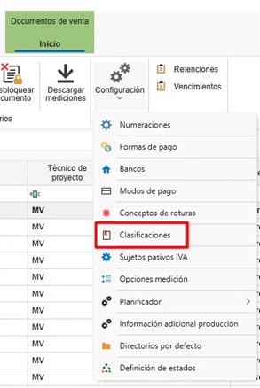
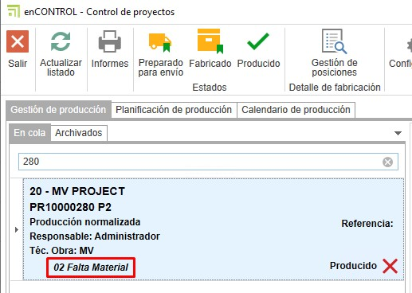

Configuración inicial de enCONTROL
1. Propósito
El presente manual está diseñado para guiar a los nuevos usuarios en la configuración inicial de enCONTROL. Esta configuración incluye todo lo necesario para poner en marcha la producción.
2. Configuración en enCONTROL
Acceder a la configuración de enCONTROL (F10) como usuario administrador. Este proceso puede tardar un poco debido a la cantidad de puestos que haya que conectar en red.
2.1. Varios
- Mostrar columna barra en mecanizados

-
Si el valor es Sí te mostrará la columna de barra en el monitor.

-
Si el valor es No solo mostrará la columna de pendientes de mecanizar en el monitor.

ℹ️ Nota: Por defecto ese valor estará a Sí.
- Cortar barra entera en monitor de corte

-
Si el valor es Sí, al cortar la barra en el monitor se hará de manera automática el corte de las posiciones de la barra indicada, sin necesidad de cortar cada posición.
-
Si el valor es No, al cortar la barra en el monitor se hará por cada hará posición.
ℹ️ Nota: Por defecto ese valor estará a Sí.
- Se define el modo en que se descontará del stock los perfiles, herrajes y accesorios según avanza la producción.

-
No descontar: No se descuenta de ningún sitio.
-
Descontar del proyecto: Se descuenta solo del proyecto, independientemente de la zona.
-
Descontar de la zona, en su defecto del proyecto: Se descuenta de la zona indicada y del proyecto.
-
Descontar de la zona: Solo se descuenta de la zona indicada, independientemente del proyecto.
-
Descontar del proyecto, en su defecto de cualquier zona: Se descuenta del proyecto y de cualquier zona.
-
En Ruta de documentación genérica puedes indicar documentaciones como información del sistema, entre otros, que se pueda ver desde enCONTROL y los puestos.

Ejemplo en un puesto:

2.2. Puestos
- En "Puestos" definirás los equipos asociados para cada puesto que esté conectado a la red.
3. Configuración de producción en ENBLAU
3.1. Configuración del layout de producción
La configuración del layout de producción permite definir la estructura organizativa de la planta dentro del módulo enCONTROL, incluyendo plantas, líneas de producción y puestos de trabajo.
- Accede al menú: Configuración → Producción → Configuración Layout.

-
Desde la interfaz de Layout de Producción, puedes añadir:
-
Planta
- Línea de producción
- Puestos de trabajo
-
Al seleccionar una línea de producción, se mostrará en el lateral derecho el apartado Horario de la línea. Aquí puedes configurar:
-
Días de la semana operativos.
- Hora de inicio y fin de cada turno.

-
Al añadir un nuevo puesto, se deben definir los siguientes campos:
-
Tipo: Indica el tipo de puesto que deseas añadir (por ejemplo: Corte, Montaje, Mecanizado, etc.).
-
Orden: Define el orden secuencial de los puestos dentro de la línea.

-
En el campo Usuario, se puede asignar al responsable del puesto. Este usuario será el encargado de operar o supervisar dicho puesto dentro del flujo de producción.

Recomendación: Mantén siempre actualizada esta configuración para garantizar un control de producción preciso y alineado con la realidad operativa de la planta.
3.2. Clasificaciones de producción
Las clasificaciones en producción se usan de manera informativa al crear una producción para que se refleje en las líneas del puesto en enCONTROL.
- Accede al apartado de Ventas - Configuración - Clasificaciones.

- Desde "Clasificaciones", crea las clasificaciones que sean necesarias e indica la línea y los puestos de enCONTROL.

- Al crear una producción desde un pedido de venta, verás que hay un desplegable de clasificaciones donde puedes indicar la clasificación para esa producción.

3.3. Informes de Producción Logikal
-
Informes que se requieran y que se generan automáticamente, guardándose como documentación de Logikal en producción. Estos documentos se verán en la ruta de documentación en los puestos de enCONTROL.
-
En el presupuesto (producción), accede al apartado de Logikal - Informes para producción. Desde allí, marca los informes que quieras que se guarden en producción como documentación en la columna Para documentación.

ℹ️ Nota: Para el tema de la documentación, no cambies nada en las columnas Exportación y Gestión.
3.4. Información adicional
La información adicional es un campo informativo para cuando la producción pase a cola del taller en enCONTROL, de modo que el responsable de taller pueda consultarla.
- Accede al apartado de Ventas - Configuración - Información adicional producción.

- Desde "Información adicional producción", crea las informaciones adicionales que sean necesarias.

- Al crear una producción desde un pedido de venta, verás que hay un desplegable de información adicional donde puedes indicar cómo quieres que llegue esa información a la cola de producción.


4. Conclusión
Siguiendo este manual, podrás realizar una configuración inicial de enCONTROL para el uso en la creación de producción.
 Español
Español
 English
English
 Italiano
Italiano
 Português
Português